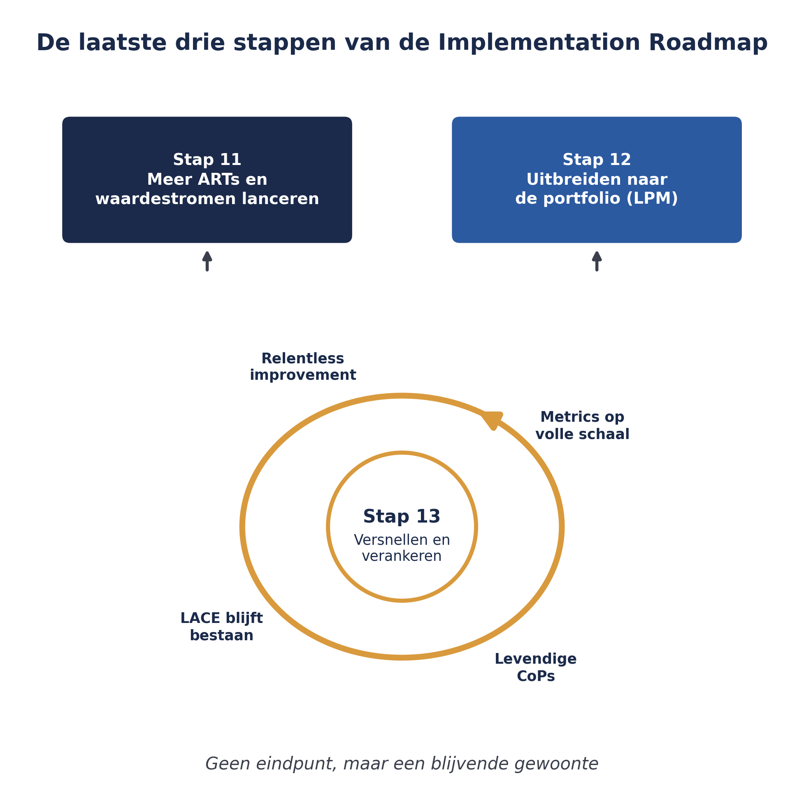
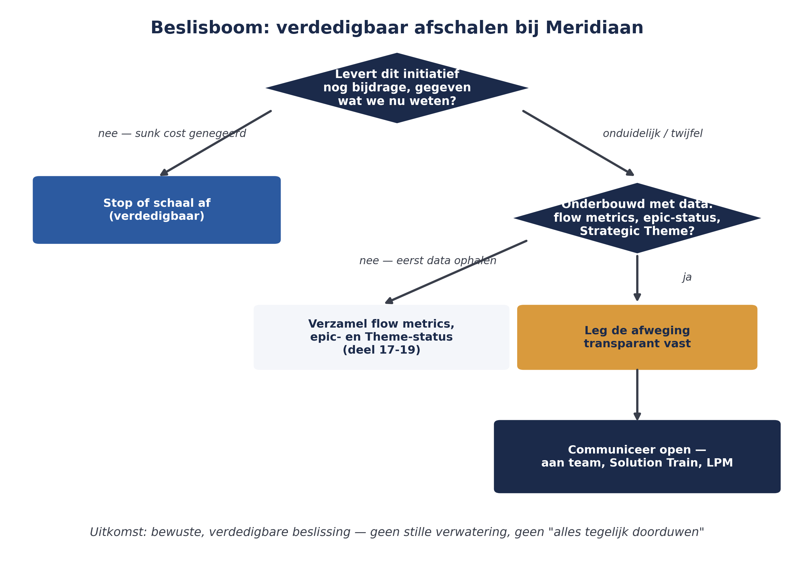

Cursus SAFe · Niveau 3 (SPC-oriëntatie) · Deel 28 van 30
Organisatieverandering, cultuur en verdedigbaar afschalen
Dit deel sluit de behandeling van de Implementation Roadmap af met de laatste drie stappen: meer ARTs en waardestromen lanceren, uitbreiden naar de portfolio, en versnellen en verankeren. Daarna behandelt het een onderwerp dat niet in de roadmap zelf staat, maar dat elke ervaren SPC vroeg of laat tegenkomt: hoe je verdedigbaar afschaalt — bewust een deel van een transformatie terugschaalt of stopt, op basis van een onderbouwde afweging in plaats van politiek gewin.
5secties
±1,5uleestijd + werkboek
7controlevragen
4richtlijnen afschalen
Positionering. Deze cursus is een voorbereiding op de certificeringen SAFe Agilist (SA) en SAFe Practitioner (SP) van Scaled Agile, en uitdrukkelijk geen vervanging van het officiële SAFe-curriculum — dat wordt uitsluitend aangeboden via geautoriseerde Scaled Agile Partners. Voor terminologie en structuur volgen wij SAFe 6.0, de actuele versie van het Core-raamwerk.
Niveau 3: 23 SPC-rol & Implementation Roadmap → 24 Leiders trainen & LACE → 25 Waardestromen op stelselschaal → 26 Een ART launchen → 27 Coachen & trainen → 28 Organisatieverandering & cultuur (hier) → 29 AI-Native III → 30 Proefexamen + masterproef
01
Stap 11: meer ARTs en waardestromen lanceren
⏱ 14 min
Dit deel sluit de behandeling van de Implementation Roadmap af met de laatste drie stappen: meer ARTs en waardestromen lanceren, uitbreiden naar de portfolio, en versnellen en verankeren. Daarna behandelt dit deel een onderwerp dat niet in de roadmap zelf staat, maar dat elke ervaren SPC vroeg of laat tegenkomt: hoe je verdedigbaar afschaalt — bewust een deel van een transformatie terugschaalt of stopt, op basis van een onderbouwde afweging in plaats van politiek gewin of het vermijden van een ongemakkelijk gesprek.
Met de eerste ART succesvol gelanceerd en gecoacht (deel 26-27), herhaalt de organisatie hetzelfde patroon voor de overige waardestromen die in de Value Stream Identification Workshop (deel 25) zijn geïdentificeerd: opnieuw voorbereiden, trainen, lanceren, coachen — nu met de geleerde lessen van de eerste ART als voordeel. Deze herhaling gaat niet vanzelf: andere delen van de organisatie tonen vaak weerstand met de gedachte "het werkte voor team X, maar dat werkt bij ons niet" (deel 27) — elke waardestroom verdient dezelfde zorgvuldige aanpak, niet een verkorte versie omdat het "de tweede keer wel sneller zal gaan".
Controlevraag
Uit Werkboek deel 28, Opdracht 28.1 — de laatste drie stappen
1Wat gebeurt er in stap 11 van de Implementation Roadmap, en met welk eerder deel van deze cursus verbind je dat?Toon antwoord
Stap 11 herhaalt het patroon van de eerste ART-lancering — voorbereiden, trainen, lanceren, coachen — voor de overige waardestromen die in de Value Stream Identification Workshop zijn geïdentificeerd. Dat verbindt direct aan deel 25 (waardestromen identificeren) en deel 26 (het lanceringspatroon zelf).
02
Stap 12-13: portfolio, versnellen en verankeren
⏱ 16 min
Zodra meerdere ARTs en waardestromen operationeel zijn, wordt het tijd om Lean Portfolio Management (niveau 2 van deze cursus) op ondernemingsniveau in te richten: Strategic Themes, Lean Budgets, de Portfolio Kanban en Lean Governance worden niet langer op één waardestroom toegepast, maar over de volle breedte van de onderneming. Dit is het moment waarop de transformatie zich niet langer beperkt tot "hoe teams werken", maar ook echt bepaalt hoe de raad van bestuur investeringsbeslissingen neemt.
De laatste stap richt zich op het duurzaam maken van wat is bereikt: meedogenloze verbetering (relentless improvement) als vaste gewoonte, doorlopende leiderschapstraining, een LACE dat blijft bestaan (niet wordt ontbonden zodra de eerste successen binnen zijn), levendige Communities of Practice, het aanpassen van HR-praktijken aan de nieuwe manier van werken, en het structureel volgen van metrics over alle ARTs heen (deel 19, nu op volle schaal). Dit is ook het moment waarop geavanceerde SAFe-certificeringen — zoals RTE en Advanced Scrum Master — breder worden uitgerold, nu de basis stevig staat.

Figuur 28-1 — de laatste drie stappen van de Implementation Roadmap, met "versnellen en verankeren" als doorlopende cirkel in plaats van een eindpunt
Controlevraag
Uit Werkboek deel 28, Opdracht 28.1 — de laatste drie stappen
1Wat gebeurt er in stap 12 en stap 13 van de Implementation Roadmap, en met welke delen van deze cursus verbind je die?Toon antwoord
Stap 12 (uitbreiden naar de portfolio) richt Lean Portfolio Management op ondernemingsniveau in — een koppeling met niveau 2 (deel 17-20). Stap 13 (versnellen en verankeren) maakt het bereikte duurzaam via relentless improvement, een blijvend LACE en metrics op volle schaal — een koppeling met deel 19 (meten) en deel 24 (leiders trainen, LACE).
03
Organisatieverandering is meer dan structuur
⏱ 15 min
De dertien stappen van de Implementation Roadmap beschrijven vooral structuur: rollen, events, backlogs. Maar een transformatie die alleen structuur verandert zonder cultuur, blijft kwetsbaar — precies het half-agile risico uit deel 27. Cultuur verandert niet door een aankondiging, maar door herhaald, consistent gedrag van mensen met invloed: leiders die metrics gebruiken om te leren in plaats van af te rekenen (deel 19), RTE's die faciliteren in plaats van sturen (deel 12), en een organisatie die eerlijke rapportage beloont in plaats van schijnvoortgang zoals bij WGP 2.0 (deel 1, deel 6). Deze cursus heeft dat patroon steeds herhaald, omdat het precies is waar een transformatie in de praktijk op vastloopt of juist beklijft.
Controlevraag
Uit Werkboek deel 28, Opdracht 28.2 — structuur versus cultuur
1Leg het verschil uit tussen een organisatie die alleen structuur heeft veranderd en een organisatie die ook cultureel is veranderd. Geef voor elk een concreet, waarneembaar signaal.Toon antwoord
Structuurverandering: nieuwe rollen, PI Planning-events en backlogs bestaan op papier. Cultuurverandering: mensen gedragen zich er ook naar — bijvoorbeeld een leider die een tegenvallende flow metric bespreekt als leermoment (signaal van cultuurverandering) in plaats van als afrekenmoment (signaal dat structuur wel, cultuur niet is veranderd).
04
Verdedigbaar afschalen
⏱ 18 min
Niet elke transformatie moet, of kan, blijven groeien. Soms blijkt een waardestroom, een ART, of zelfs een deel van de bredere transformatie niet de verwachte waarde op te leveren, of niet haalbaar binnen de beschikbare tijd en middelen. Verdedigbaar afschalen betekent: die keuze bewust en onderbouwd maken, in plaats van door te modderen uit gewoonte of politiek ongemak.
Geen officieel SAFe-artefact
Verdedigbaar afschalen is geen letterlijk onderdeel van de Implementation Roadmap of het SAFe-raamwerk zelf. Het is praktijkwijsheid die bij het leiden van een transformatie hoort — niet minder belangrijk daardoor, maar wel goed om als zodanig te benoemen.
Een paar richtlijnen die dit onderscheid houvast geven:
Prioriteer op bijdrage, niet op reeds geïnvesteerde moeite. Het feit dat een initiatief al veel tijd en geld heeft gekost, is geen goede reden om ermee door te gaan — dat is de bekende sunk cost-valkuil. De vraag is: wat levert dit initiatief vanaf nu nog op, gegeven wat we nu weten?
Onderbouw de keuze met data, niet met stemming. Flow metrics (deel 19), de status van een epic in de Portfolio Kanban (deel 18), of de voortgang op een Strategic Theme (deel 17) geven een objectiever aanknopingspunt dan alleen het gevoel dat "het niet lekker loopt".
Leg de afweging transparant vast en communiceer haar open. Afschalen dat in het geniep gebeurt, voedt precies het wantrouwen (deel 27) dat een transformatie ondermijnt. Een verdedigbare beslissing kan hardop worden uitgelegd aan iedereen die er belang bij heeft — inclusief waarom, en wat ervan geleerd is.
Onderscheid afschalen van falen. Een initiatief bewust terugschalen omdat de data dat rechtvaardigt, is een teken van een gezonde, lerende organisatie — dezelfde gedachte die je al kende van "pivot" in de Portfolio Kanban (deel 18): een MVP die een hypothese weerlegt, is geen mislukking maar winst aan kennis.

Figuur 28-2 — een beslisboom voor verdedigbaar afschalen bij Meridiaan: bijdrage, data, transparantie, geen sunk cost
Controlevragen
Uit Werkboek deel 28, Zelftoets vraag 3-4 en Opdracht 28.3 — verdedigbaar afschalen toepassen
1Noem de vier richtlijnen voor verdedigbaar afschalen.Toon antwoord
Prioriteer op bijdrage, niet op geïnvesteerde moeite; onderbouw met data, niet stemming; leg de afweging transparant vast en communiceer die open; onderscheid afschalen van falen.
2Wat is de sunk cost-valkuil, en hoe voorkom je die?Toon antwoord
De neiging om door te gaan met iets omdat er al veel in is geïnvesteerd, in plaats van te kijken naar wat het vanaf nu nog oplevert. Je voorkomt het door consequent de vraag te stellen wat iets vanaf nu bijdraagt, los van wat het al heeft gekost.
3Een van de vier ARTs binnen de Solution Train Mutatieplatform presteert na twee jaar nog steeds slecht op flow metrics, ondanks herhaalde coaching. Welke data zou je willen zien, hoe zou je een verdedigbare afschaling communiceren, en wat is het verschil met "gewoon opgeven"?Toon antwoord
Data: flow metrics over meerdere PI's (trend, niet één meting), de status van epics die deze ART raken in de Portfolio Kanban, en of de Strategic Theme waar deze ART aan bijdraagt nog steeds prioriteit heeft. Communicatie: transparant, eerst aan de betrokken teams zelf, dan aan de bredere Solution Train en LPM, met een heldere uitleg van de data en de overwegingen — niet als verrassing achteraf. Verschil met opgeven: de onderbouwing zit in data, transparantie en een blik op toekomstige bijdrage, in plaats van een emotionele of politieke beslissing zonder heldere reden.
05
Terug naar Meridiaan: de Stelselovergang richting 2028
⏱ 13 min
Naarmate de deadline van 1 januari 2028 dichterbij komt, moet Meridiaan mogelijk keuzes maken over de reikwijdte van de transformatie. Stel dat een van de geplande uitbreidingen — bijvoorbeeld een derde ART naast het Mutatieplatform en de invaar-ART, gericht op een uitgebreide zelfservicefunctie voor deelnemers — niet op tijd haalbaar blijkt zonder de kernprioriteit (het invaren zelf, tijdig en foutloos) in gevaar te brengen. Verdedigbaar afschalen betekent hier: deze derde ART bewust en transparant uitstellen tot ná de Wtp-deadline, onderbouwd met de status van de kernwaardestromen (deel 25) en de guardrails uit deel 17, in plaats van deze in stilte te laten verwateren of, omgekeerd, alle drie tegelijk door te blijven duwen totdat er iets breekt.
Kernbegrippen uit dit deel
Stap 11-13 van de Implementation Roadmap — meer ARTs/waardestromen lanceren, uitbreiden naar de portfolio, versnellen en verankeren.
Organisatieverandering als cultuurverandering — structuur alleen is kwetsbaar; consistent gedrag van mensen met invloed maakt een transformatie duurzaam.
Verdedigbaar afschalen — bewust en onderbouwd terugschalen of stoppen, op basis van bijdrage en data, transparant gecommuniceerd, onderscheiden van falen.
Controlevraag
Uit Werkboek deel 28, Zelftoets vraag 5
1Wat is het verschil tussen verdedigbaar afschalen en falen?Toon antwoord
Verdedigbaar afschalen is een bewuste, onderbouwde, transparante keuze gericht op toekomstige bijdrage — zoals het uitstellen van de derde ART bij Meridiaan tot ná de Wtp-deadline. Falen is ongepland, vaak in stilte, en zonder heldere onderbouwing.
Verder naar deel 29
Deel 29 voltooit de AI-Native-lijn (na deel 9 en 21) met het portfolioniveau: het Outcome-Driven Product Development Cycle, Roofshots en Moonshots, en hoe een AI-native operating model eruitziet — oriënterend, en wordt bijgewerkt na de SAFe Summit van september 2026.